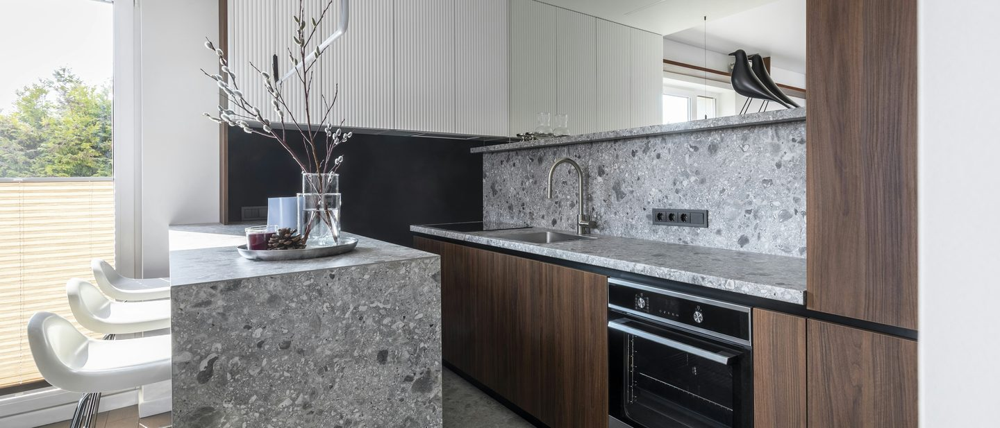
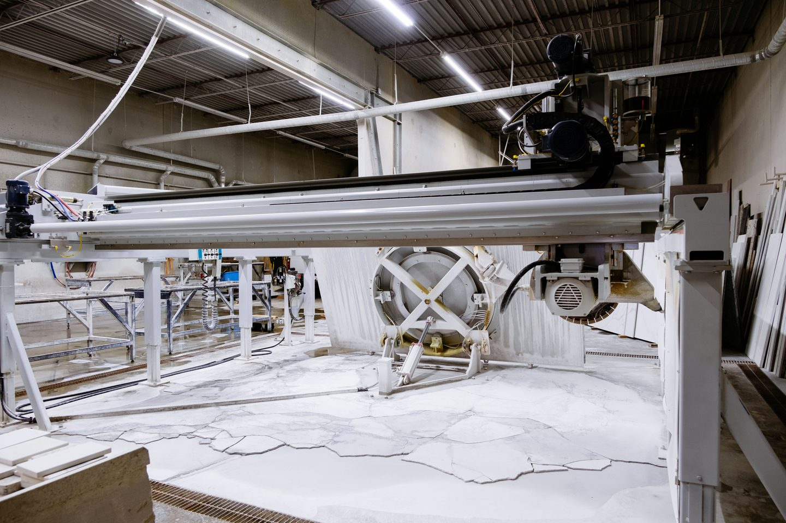

Quartz, Dekton and Silestone, engineered for consistency.
Engineered stone installation across London. Manufactured surfaces with predictable performance, fitted by specialists who handle the formats they come in.

Quartz is engineered stone. So is Dekton.
Engineered stone is a manufactured material: natural minerals bound with resin or sintered under heat and pressure.
Quartz surfaces, Silestone and Dekton all sit in this category, which is why they share a page rather than competing across several.
The advantage is predictability. Shade and pattern are consistent slab to slab, porosity is very low, and performance is specified by the manufacturer rather than inferred from a sample. For anyone who wants a defined result, that is a significant benefit over natural stone.
The trade-off is that these are large, heavy, rigid sheets. They need vacuum lifting, careful transport and a substrate within tolerance. And sintered products in particular are hard on tooling and unforgiving of a badly planned cut.
What we install.
Quartz surfaces
Worktops, splashbacks and vanity tops in resin-bound quartz, jointed and sealed to a consistent line.
Dekton
Sintered surfaces for floors, walls, worktops and external applications where UV and heat stability matter.
Silestone
Full range including textured finishes, fitted to the manufacturer specification.
Large-format flooring
Engineered slabs to floors and walls, dry-laid and vacuum-handled.
External applications
Sintered surfaces outdoors, where the fixing method has to allow for thermal movement.
Precision jointing
Joints planned to fall where they are least visible, and cut to a consistent width throughout.

Large sheets, tight tolerances.
Most of the risk in engineered stone is in handling and setting out, not in the material.
- 01Template taken from the actual space, not the drawing alone
- 02Product confirmed as suitable for UV, heat and moisture exposure
- 03Slabs vacuum-lifted; sheet size checked against access
- 04Substrate surveyed to tolerance before delivery
- 05Cuts and joints planned to fall where they are least visible
- 06Fixed and jointed to the manufacturer specification to protect the warranty
Quartz and engineered stone.
Is quartz better than granite?
Quartz is more consistent and less porous; granite is a natural material with more variation and higher heat tolerance. Quartz suits anyone who wants a predictable, uniform surface. Granite suits anyone who wants the character of natural stone or needs heat resistance.
Can quartz go outside or next to a hob?
Resin-bound quartz is generally not recommended for either: UV can discolour it and direct heat can damage the resin. A sintered surface such as Dekton is the right specification for outdoor and high-heat locations.
What is Dekton, exactly?
A sintered surface: mineral particles fused under very high heat and pressure with no resin binder. That makes it UV-stable, heat-resistant and extremely dense, which is why it works outdoors and in large-format flooring where quartz would not.
Will the joints be visible?
On any material that comes in sheets, joints exist. What we control is where they fall and how consistent they are, planned into the layout at template stage so they land in the least conspicuous position.